Bucharest University of Economic Studies, Department of Statistics and Econometrics Romanian Academy, Institute for Economic Forecasting
Every day, one auction decides what electricity will cost in Romania for each quarter-hour of the next day. A supplier who buys for its retail customers, a hydro producer who decides when to release water, a factory that can move part of its consumption and a trader who exports to Hungary all start from the same number: the price of the day-ahead market, Piața pentru Ziua Următoare (PZU), run by the Romanian electricity and gas market operator (OPCOM). This first lecture explains how that price is formed, how the Romanian market is linked to the rest of Europe, and what the price series looks like once it is downloaded, cleaned and measured correctly.
The lecture uses only real data, downloaded on 4 November 2026 and cut off at 31 October 2026: day-ahead prices for Romania, Bulgaria, Hungary and Germany–Luxembourg, Romanian generation by source and consumption, cross-border flows, the Brent crude oil futures price and the Dutch gas price. On these data we document the stylized facts that every later model must reproduce: the jump of 2021–2022, the weekly and annual seasonality, the midday price trough created by solar generation, spikes, negative prices, fat tails and volatility clustering. We then build the basic time-series toolkit (stationarity, autocorrelation, unit-root tests, decomposition, smoothing) and the naive benchmark that every forecast has to beat, and close with six case studies on current episodes, from the dry year 2025 to the new Bulgarian batteries of 2026.
What you will be able to do
Explain how one day-ahead auction sets a price for every hour (now every quarter-hour) and how European market coupling links Romania with its neighbours.
Compute and read the Romanian generation mix from metered data, together with its coverage.
Recognise the stylized facts of power prices on real data and choose a transformation that works when prices are zero or negative.
Use the core time-series toolkit and the naive benchmark that every forecast must beat.
Read six current episodes quantitatively, from the dry year 2025 to Bulgaria's new batteries in 2026.
Lecture plan
Power markets in Romania and EuropeThe price of electricity in Romania is set by a single daily auction that is coupled with the rest of Europe and, since October 2025, clears every quarter-hour.
Energy data and stylized factsBefore any model, the data must be measured in the right units, on the right clock and without invented values.
Time-series toolkitThis section introduces the tools used throughout the course to describe a price series: stationarity, autocorrelation and partial autocorrelation, the naive benchmark, unit-root tests, decomposition and exponential smoothing.
Case studies on current dataSix episodes from 2023 to 2026 show the stylized facts at work: a wet and a dry year, an oil shock, a regional price separation, negative prices and solar, the price rise of 2026 and the arrival of batteries in Bulgaria.
Wrap-upThe wrap-up checks two skills of the lecture, counting negative prices and reading an autocorrelation, summarises the main messages, presents related research from our group and points to further resources.
AppendixThe appendix gives the full formulas of the unit-root tests, a worked example of classical decomposition, the STL algorithm, the generation mix and the naive benchmark in numbers, the fat-tail statistics with the full logit table, and the conversion of fuel prices to EUR/MWh.
Power markets in Romania and Europe
The price of electricity in Romania is set by a single daily auction that is coupled with the rest of Europe and, since October 2025, clears every quarter-hour. This section explains the auction, the merit order, the sequence of markets around a delivery day, the institutions that set the rules, market coupling and the Romanian generation mix.
Every number and chart in this lecture comes from downloaded data. Prices come from four exchanges: OPCOM for Romania, the Independent Bulgarian Energy Exchange (IBEX), the Hungarian Power Exchange (HUPX) and the European Power Exchange (EPEX SPOT) for Germany; they are collected through the European Network of Transmission System Operators for Electricity (ENTSO-E) and republished by energy-charts.info, the data portal of the Fraunhofer Institute for Solar Energy Systems (ISE).
Series
Frequency
Source
From
Day-ahead prices: Romania (RO), Bulgaria (BG), Hungary (HU), Germany–Luxembourg (DE-LU)
15/60 min
energy-charts.info (Fraunhofer ISE)
2015-01-01
Generation by source and consumption, Romania and Bulgaria
hourly
energy-charts.info, ENTSO-E actual generation
2015-01
Romanian cross-border physical flows
hourly
energy-charts.info, ENTSO-E
2015-01-01
Brent crude oil, front-month futures
daily
Yahoo Finance (BZ=F)
2015-01-02
Title Transfer Facility (TTF) gas, monthly
monthly
World Bank; European Central Bank (ECB) exchange rates
2015-01
The data end on 31 October 2026, the last complete month, and were downloaded on 4 November 2026. Whenever the lecture writes "2026 year to date (YTD)", it means January to October 2026. Missing values stay missing: they are never interpolated and never counted as zero, and every total is reported together with its coverage, the share of hours for which data exist.
The day-ahead auction: a clearing price for each quarter-hour
On the day-ahead market, sellers and buyers send price–quantity bids for each delivery interval of the next day. The exchange looks for the price at which the energy offered equals the energy demanded, and every accepted trade is paid that single price:
where \(t\) is the delivery quarter-hour (the delivery hour before October 2025), \(S_t(p)\) the supply curve, that is the energy offered at prices of at most \(p\), with plants sorted by cost (the merit order: renewables and nuclear at the bottom, gas near the top), \(D_t(p)\) the demand curve, the energy bought at prices of at least \(p\), and \(p_t^{*}\) the clearing price in euro per megawatt-hour (EUR/MWh).
On our data, the PZU cleared on average at 137.45 EUR/MWh in January–October 2026. In Romania, reservoir hydro plants bid their "water value", the opportunity cost of using the water now rather than later, and they often set the price. The same mechanism explains the two extremes of power prices: when demand reaches the steep part of the supply curve, the price spikes; when inflexible output and solar generation exceed demand, the price turns negative (Weron, 2014; Maciejowska, Uniejewski & Weron, 2023).
In practice: on PZU a supplier pays the price of the most expensive plant needed, not the average cost.
The supply side of the auction is a list of sell offers sorted from the cheapest to the dearest. Each producer offers close to its marginal cost, the cost of producing one more MWh. The usual order is wind, solar and nuclear, whose marginal cost is close to zero, then run-of-river hydro, lignite and finally gas. Reservoir hydro is the exception: it offers at its water value, the price it expects to obtain later for the same water. The demand side is the list of buy bids sorted from the highest to the lowest price; since most consumption is bought at any price, the demand curve is almost vertical.
The price is set by the last accepted offer, the marginal one, and every accepted seller receives it, including those with much lower costs. The difference between the price and their cost, the inframarginal rent, is what pays for their capacity. This also explains why prices move: sun and wind shift the supply curve to the right and lower the price, while evening demand or a missing nuclear reactor move the crossing point to the steep, gas-fired part of the curve and raise it.
In practice: the price of a quarter-hour is the cost of its most expensive accepted offer, not the average cost of the system.
The merit order on real OPCOM curves, 21 October 2026
The chart shows the aggregated supply and demand curves that OPCOM publishes for the PZU, for two quarter-hours of the same day, 21 October 2026. The quantities include block orders, hourly orders and net cross-border flows, so the curves are the real ones that the auction intersected.
At midday, 2,333 MW were offered at zero or negative prices, mostly solar, wind, nuclear and run-of-river hydro that must run anyway, and the market cleared at 152.23 EUR/MWh. In the evening there was no sun, the supply curve contained 1,054 MW of net imports, and the crossing moved to the steep part of the curve: the price was 244.00 EUR/MWh. The difference between the two prices on the same day is not noise; it is the shape of the supply curve at two different levels of renewable output.
In practice: a buyer who can shift consumption from evening to midday pays the lower clearing price.
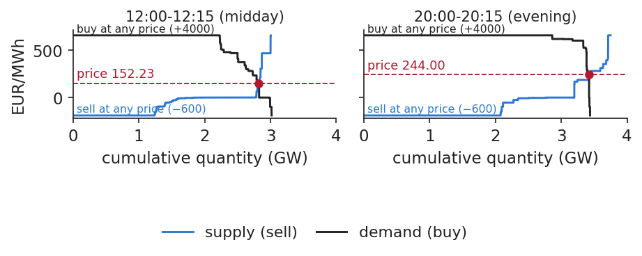
Aggregated PZU supply and demand curves (price in EUR/MWh against cumulative quantity in GW) for a midday and an evening quarter-hour of 21 October 2026, with the clearing point marked on each.
Source: OPCOM, PZU aggregated curves. Data: 2026-10-21, Romanian time; quantities include blocks, hourly orders and net flows.
The day-ahead auction is only one of four steps in the life of a delivery day. First, weeks to years ahead, energy is bought and sold forward, on the OPCOM centralised markets or in bilateral over-the-counter (OTC) deals. Second, on day \(d-1\), bids are sent to the PZU before gate closure at 12:00 Central European Time (CET), which is 13:00 in Bucharest; the results are published early in the afternoon. Third, on \(d-1\) and on \(d\), positions are corrected in intraday auctions (IDA) and in continuous intraday trading until shortly before delivery. Fourth, on day \(d\), in real time, Transelectrica, the transmission system operator (TSO), balances the grid, and every deviation from the notified schedule is settled per 15 minutes as imbalance.
Two practical details matter for data work. Romania runs on Eastern European Time (EET), one hour ahead of CET, and the Single Day-Ahead Coupling (SDAC) clears in EUR, while OPCOM also publishes prices in Romanian lei (RON). The order of the steps also matters: each one corrects the previous one, so what is not covered forward is bought on the PZU, and what is still wrong after intraday trading is settled as imbalance (Maciejowska, Uniejewski & Weron, 2023).
In practice: a trader hedges forward, bids on PZU before 13:00 Bucharest time, fixes forecast errors intraday and pays what is left as imbalance.
Who sets the rules: operators, regulators, price limits, disclosure
Three Romanian institutions shape the market. OPCOM is the Nominated Electricity Market Operator (NEMO) and runs the PZU and the intraday market. Transelectrica, the TSO, runs the grid in real time and settles imbalances. The Romanian Energy Regulatory Authority (ANRE) sets the national rules and licenses market participants.
Disclosure is governed by the European Union (EU) Regulation on wholesale energy market integrity and transparency (REMIT): inside information, for example an unplanned outage of a large plant, must be published promptly, and such messages move PZU prices. The EU Agency for the Cooperation of Energy Regulators (ACER) monitors the market for abuse. Prices are also bounded: the harmonised SDAC minimum was \(-500\) EUR/MWh and became \(-600\) EUR/MWh for delivery from 29 May 2026. A price series that touches the floor is censored there, because the true willingness to pay was even lower; a model that treats the floor as an ordinary observation understates how extreme the situation was.
In practice: read REMIT messages before bidding: an unplanned outage announced in time changes the PZU price.
Coupling lets power flow to the higher price until the network limit binds
Europe runs one joint day-ahead auction. Conceptually, the algorithm chooses the quantities bought and sold in every bidding zone so as to maximise total welfare, the value to buyers minus the cost of sellers, subject to the limits of the network:
where \(z\) is a bidding zone, \(d_z\) and \(s_z\) the energy bought and sold in \(z\), \(D_z^{-1}\) and \(S_z^{-1}\) the inverse demand and supply curves (the buyers' value and the sellers' cost of each MWh), and \(\mathcal F\) the set of feasible exchanges between zones. Cheap zones export to expensive ones until a network limit binds. If no limit binds, prices are equal, \(p_z=p_{z'}\); otherwise they separate.
The picture of one capacity per border is a simplification. Since 8 June 2022 the Romania–Hungary border is part of the Core region's flow-based allocation, with limits on critical network elements, while Romania–Bulgaria keeps a per-border limit. Two cautions follow: equal prices do not prove that a border was uncongested, and a price gap does not say which line was full. Scheduled exchanges also differ from physical flows, and long-term transmission rights are sold separately by the Joint Allocation Office (JAO).
In practice: a trader on RO–HU flows earns the price spread only when cross-border capacity binds.
Ten years of coupling: from four countries to one European auction
The Romanian market joined the European one step by step. In 2014 Romania was coupled with Czechia, Slovakia and Hungary in the 4M Market Coupling. On 19 November 2019 it joined the Single Intraday Coupling (SIDC), and on 17 June 2021 the Single Day-Ahead Coupling, through the 4M interim coupling. The Bulgaria–Romania border was coupled in SDAC on 27 October 2021, and on 8 June 2022 the Romania–Hungary border moved to Core flow-based allocation. In March 2025 the Romanian borders entered the intraday auctions, and on 1 October 2025 SDAC moved to a 15-minute market time unit.
All prices are computed by the Pan-European Hybrid Electricity Market Integration Algorithm (EUPHEMIA). For the analyst the lesson is simple: each of these steps changed the data, by bringing new neighbours, new products or a finer resolution. Before comparing two periods, check which of these dates lies between them.
Since 1 October 2025 a trading day has 96 prices, not 24
The market time unit (MTU) shrank from one hour to 15 minutes, so every count of hours must now be converted. The daily base price and the number of hours with a negative price are computed as
where \(p_{d,m}\) is the price of MTU \(m\) on day \(d\), \(M_d\) the number of MTUs that day (96 since October 2025, 24 before, one more or one fewer on the two days when daylight saving time (DST) starts or ends), \(\bar p_d\) the daily base price, \(\mathbb 1\{p_t<0\}\) equals 1 if the price of interval \(t\) is negative and 0 otherwise, \(\Delta_t\in\{60,15\}\) is the MTU length in minutes, and \(H_y\) the number of hour-equivalents with a negative price in year \(y\).
Our data contain 94,222 hourly MTUs until September 2025 and 38,020 quarter-hours since. In January–October 2026 Romania had 687 negative quarter-hours, which is 171.75 hours. Counting each quarter-hour as an hour would overstate the duration by a factor of 4 and would make 2026 look far worse than earlier years.
In practice: always ask "hours or quarter-hours?" before comparing years.
Romania's power: hydro, nuclear, gas and coal, with solar rising fast
Romania produces electricity from a diversified mix. In the chart, hydro is the sum of run-of-river (RoR) and reservoir plants, and coal the sum of lignite and hard coal. The black bar is consumption: when it lies above the stacked production, the country was a net importer that year. Energy is summed over the hours reported by the TSO, with coverage of at least 98.1% in the full years, and metered solar may miss part of the output of rooftop panels, which is consumed behind the meter.
The left panel shows how production shrank and changed composition over a decade; the right panel compares January–October 2025 with January–October 2026 on the hours reported in both years, so that a missing month does not look like a fall in output.
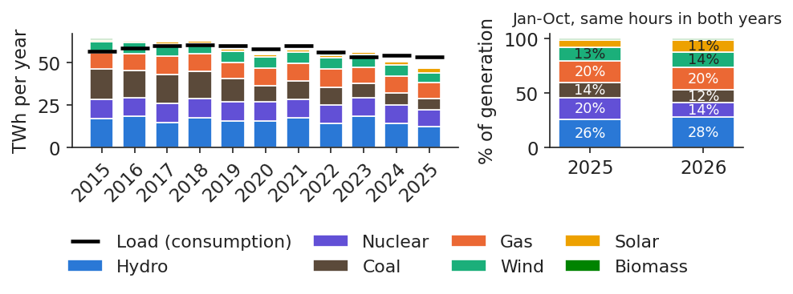
Annual Romanian generation by source (TWh, stacked) for the full years 2015–2025, with consumption as a black bar (left), and the shares of each source in January–October 2025 and 2026 (right).
Source: energy-charts.info (Fraunhofer ISE); ENTSO-E (Transelectrica data for Romania). Data: 2015-2025 full years (left); Jan-Oct 2025 and 2026, hours reported in both years (right); cut-off 2026-10-31.
Comparing the shares of each source in 2015, 2025 and January–October 2026 shows three movements. Coal output fell by 63.9% from 2015 to 2025, while metered solar grew 2.2 times over the same years. In 2026, nuclear output fell by 31.3% in January–October compared with the same months of 2025, on the hours reported in both years. The true fall is at least as large, because the 29 September days for which nuclear output was not reported are simply left out of the comparison. The detailed table is in Appendix D.
These shifts matter for prices because they change which plant is marginal. Less coal and less nuclear in the base means that gas, imports or reservoir hydro set the price more often; more solar pushes midday prices down and increases the gap to the evening.
In practice: hydro producers and industrial consumers watch which plant becomes marginal when water or a reactor is missing.
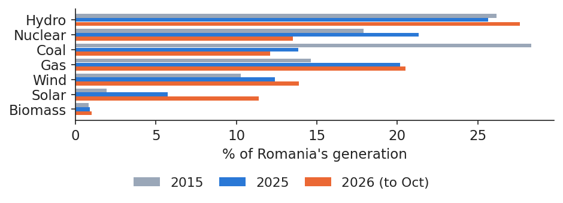
Share of each source in Romanian generation (%) in 2015, 2025 and January–October 2026, as horizontal bars.
Source: energy-charts.info (Fraunhofer ISE); ENTSO-E (Transelectrica data for Romania). Data: 2015, 2025 full years; Jan-Oct 2026, hours reported in both 2025 and 2026.
This lecture opens a course of seven: (1) energy markets and their data; (2) forecasting with classical and expert autoregressive models with exogenous variables (ARX); (3) volatility; (4) risk in energy companies, including price–volume risk, cash flow at risk, imbalance and basis risk; (5) derivatives and hedging, including power purchase agreements (PPA); (6) renewables, storage and flexibility, with cannibalisation, negative prices and batteries; (7) machine learning and foundation models for forecasting.
The models used in the literature fall into three families (Weron, 2014): fundamental models, built on the supply stack and on fuel and carbon costs; reduced-form models (mean reversion, jumps) and statistical models; and machine learning and hybrid models. The same data can also be seen in two ways (Ziel & Weron, 2018): univariately, as one long series of prices, or multivariately, as 24 (now 96) daily series, one per delivery period. Whatever the family, every model must beat the naive benchmark introduced in Section 3.
In practice: ask any forecast vendor which family the model belongs to and by how much it beats the naive benchmark.
Section summary
One coupled auction per day sets the Romanian price as the cost of the marginal offer, now for 96 quarter-hours. The generation mix behind it is changing quickly: less coal, more solar and, in 2026, much less nuclear.
Energy data and stylized facts
Before any model, the data must be measured in the right units, on the right clock and without invented values. This section fixes those conventions and then documents, on the Romanian and European series, the stylized facts of energy prices: level shifts, seasonality at three frequencies, spikes, negative prices, fat tails and volatility clustering.
A megawatt (MW) measures power, how fast energy flows; a megawatt-hour (MWh) measures how much energy flowed, for example 1 MW during one hour. Energy over a period and the coverage of the data are computed as
\[E=\frac{1}{10^6}\sum_{t\ \text{reported}}P_t\,\Delta_t\ \ [\text{TWh}],\qquad \text{coverage}=\frac{\text{reported hours}}{\text{hours in the period}}\]
(1.4)
where \(P_t\) is the mean power in interval \(t\) in MW, \(\Delta_t\) its length in hours, so that \(P_t\Delta_t\) is in MWh, and \(E\) the energy in terawatt-hours (TWh), with \(1\ \text{TWh}=10^6\ \text{MWh}\). The sum runs only over the reported intervals: missing hours are not filled, and every total comes with its coverage.
On our data, Romania consumed 53.56 TWh in 2025, a mean load of 6.1 gigawatts (GW). Two reference prices are used throughout the course: the base price, the mean over the whole delivery day, and the peak price, the mean from 08:00 to 20:00, Monday to Friday. Gas and oil are quoted in United States dollars (USD) per million British thermal units (MMBtu) and per barrel (bbl); their conversion to EUR/MWh is given in Appendix G.
In practice: a 10 MW baseload contract delivers 240 MWh a day.
One day of Romanian consumption: power in MW, energy in MWh
The chart makes the distinction concrete for one real day, 28 October 2026. The curve is power: how much the country draws at each hour, in MW. It reached a minimum of 5,253 MW at 3:00 and a maximum of 7,719 MW at 17:00 (CET). The shaded area under the curve is energy: 159,558 MWh over the day, which is 24 hours times a mean load of 6,648 MW.
The two quantities answer different business questions. A supplier buys energy, in MWh, for each interval, and is paid for energy by its customers. The grid, by contrast, must be able to carry the peak power, in MW, even if that level lasts only one hour; capacity and network costs are driven by the peak, not by the average.
In practice: a supplier buys energy (MWh) for each interval, while the grid must cover the peak power (MW).
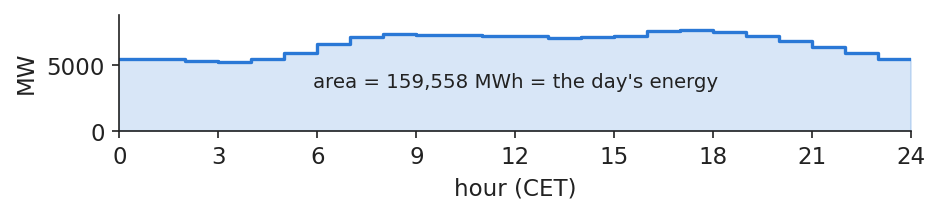
Hourly Romanian load (MW) on 28 October 2026, CET day, with the area under the curve, the day's energy in MWh, shaded.
Source: energy-charts.info (Fraunhofer ISE); ENTSO-E (Transelectrica data for Romania). Data: Romania, load on 2026-10-28 (CET day, 24 hourly values).
Raw time stamps from ENTSO-E are in Coordinated Universal Time (UTC). Daily statistics, however, must use the SDAC delivery day, which runs in CET or, in summer, in Central European Summer Time (CEST); a UTC day would put one or two hours into the wrong day. The clock changes create two irregular days each year: the last Sunday of March has 23 hours and the last Sunday of October has 25, and daily means are computed over the intervals that actually exist.
Bidding zones also change. Germany, Austria and Luxembourg formed one zone until 30 September 2018; our German series is spliced at that date. Every chart and number of the lecture is reproduced in the student notebook (notebooks/L1_notebook.ipynb), and only one figure, clearly labelled, uses simulated data, to illustrate white noise and the random walk (Lago, Marcjasz, De Schutter & Weron, 2021).
The source, energy-charts.info, which republishes the prices that OPCOM and IBEX report to ENTSO-E, has no price for some days and gives no reason. For Romania, 5 days are missing: 21 September 2015, 20 and 21 December 2015, 31 December 2017 and 17 August 2018. The Bulgarian series starts only on 31 October 2016, although IBEX has run its day-ahead market since 19 January 2016, and 15 more days are missing up to 31 December 2016. We do not fill these days, and no daily change is computed across a gap.
Futures series have their own breaks. The Brent front-month series jumps when the contract rolls from one month to the next; those jumps are not market moves, and the roll days are dropped from return statistics.
In practice: most forecasting errors at a supplier start in data handling (wrong clock, filled gaps), not in the model.
Prices jumped in 2021–2022 and never returned to the old level
The chart shows daily day-ahead prices in the four zones from 2015 to October 2026. Until 2020 prices stayed in a narrow band; in 2021–2022 the European gas crisis lifted them to levels never seen before, and the Romanian daily maximum reached 738.28 EUR/MWh on 30 August 2022. Prices then fell, but not to the old level.
Romania, Bulgaria and Hungary move together because their markets are coupled, while Germany has been cheaper since 2023. The level shift of 2021–2022 is the first stylized fact: any model estimated on pre-2021 data, or any budget based on it, describes a market that no longer exists.
In practice: an industrial consumer budgeting with pre-2021 prices is off by a factor of two to three.
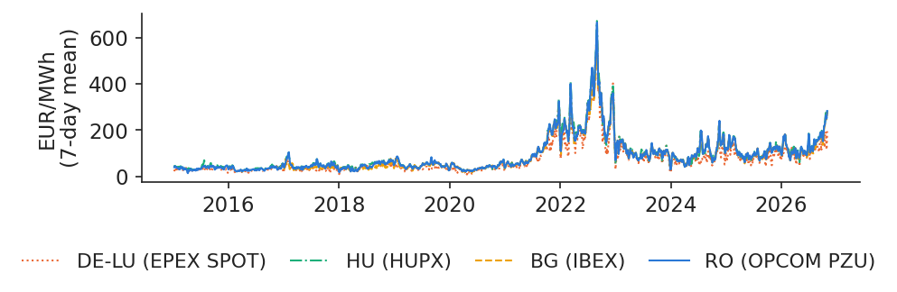
Daily base prices (EUR/MWh) in Romania, Bulgaria, Hungary and Germany–Luxembourg, 1 January 2015 to 31 October 2026 (Bulgaria from 31 October 2016).
Source: energy-charts.info (Fraunhofer ISE); exchange prices (OPCOM, IBEX, HUPX, EPEX SPOT) via ENTSO-E. Data: 2015-01-01 to 2026-10-31 (BG from 2016-10-31).
The table gives, for each zone and year, the mean price and the volatility, measured as the standard deviation of daily price changes, both in EUR/MWh.
EUR/MWh
2018
2019
2020
2021
2022
2023
2024
2025
2026 YTD
Mean RO
46.4
50.4
39.5
111.4
265.3
103.7
103.5
108.2
137.4
Mean DE-LU
44.5
37.7
30.5
96.8
235.5
95.2
78.5
89.3
114.0
Volatility RO
10.9
11.5
8.6
25.2
58.9
26.3
32.4
24.4
31.6
Volatility DE-LU
11.5
11.9
11.5
34.4
65.3
30.3
31.4
28.3
36.0
The two move together: in 2022, when the Romanian mean was 265.3 EUR/MWh, the standard deviation of daily changes was 58.9, against 8.6 in 2020, when the mean was 39.5. Bulgaria and Hungary follow the same pattern. A volatility measured in EUR/MWh is therefore not comparable across years with very different price levels. In 2026 YTD the Romanian mean was 137.45 EUR/MWh, against 105.88 EUR/MWh in January–October 2025, an increase of 29.8%.
In practice: collateral for PZU purchases must scale with the price, since a 200 EUR/MWh market moves far more than a 50 one.
Solar moved the cheapest hour of the day to midday
The chart compares the average price of each hour of the day in 2019 and in 2025, for each zone. In 2019 the cheapest hours were at night, as in a classical power system, when demand is lowest. By 2025 the cheapest hour had moved to 13:00, at 58.8 EUR/MWh in Romania, while the evening peak reached 182.5 EUR/MWh. The ratio of the evening price to the midday price rose from 1.30 to 3.11.
This is the "duck curve": solar generation fills the middle of the day, lowers the net demand left for other plants and pushes the price down, while the evening, when the sun sets and households consume, stays expensive. The intraday profile is no longer a fixed feature of the market; it changes as solar capacity grows.
In practice: a battery developer's revenue is this midday-to-evening spread, captured once or twice a day.
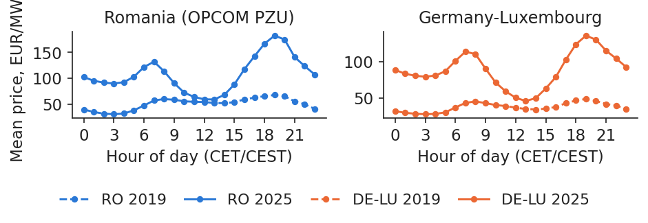
Mean day-ahead price (EUR/MWh) for each hour of the day (CET), calendar years 2019 and 2025, one panel per zone.
Source: energy-charts.info (Fraunhofer ISE); exchange prices (OPCOM, IBEX, HUPX, EPEX SPOT) via ENTSO-E. Data: calendar years 2019 and 2025, hourly.
where \(j\) is the weekday, \(W\) the number of complete weeks, \(p_{w,j}\) the daily price on day \(j\) of week \(w\), the inner sum divided by 7 the mean price of week \(w\), and \(\hat s_j\) the average distance of weekday \(j\) from its own week's mean, in EUR/MWh. Subtracting each week's own mean removes level shifts such as the one of 2022, which would otherwise dominate the averages.
On 199 weeks, from 2 January 2023 to 25 October 2026:
Mon
Tue
Wed
Thu
Fri
Sat
Sun
RO
9.1
12.7
12.6
10.4
3.4
−17.5
−30.7
DE-LU
7.0
11.0
11.6
7.9
3.3
−15.8
−25.1
A Romanian Sunday costs on average 30.7 EUR/MWh less than the mean of its week, and a Saturday 17.5 less; weekdays are above the mean, with the highest values on Tuesday and Wednesday.
In practice: an industrial consumer can move flexible load (maintenance, pumping, charging) to Sunday and save that difference.
Seasonal profile of prices, consumption and hydro output
Over the year, the Romanian price follows the balance between demand and the cheap sources. Relative to the annual mean, the price is highest in January (1.26 times the mean) and lowest in April (0.72 times). Consumption is highest in January–February and lowest in May, while hydro output peaks in June, with the snow melt. In spring, abundant water and growing solar output meet mild demand, and prices fall.
The annual profile is the third seasonal frequency of the series, after the daily and the weekly ones; models that ignore it attribute to "shocks" what is in fact a regular pattern.
In practice: a hydro producer saves reservoir water in spring, when power is cheap, to sell it in winter and late summer.
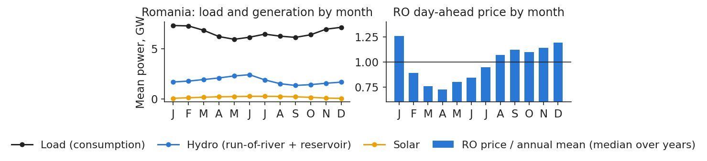
Monthly means 2016–2025: Romanian load, hydro and solar generation by month (GW, left) and the Romanian day-ahead price of each month relative to the annual mean, median over years (right).
Source: energy-charts.info (Fraunhofer ISE); exchange prices (OPCOM, IBEX, HUPX, EPEX SPOT) via ENTSO-E. Data: monthly means 2016-2025.
A spike is an interval whose price is far above what is normal for that year. A robust rule flags an interval \(t\) of year \(y\) as a spike when
\[p_t>Q_{3,y}+3\,(Q_{3,y}-Q_{1,y})\]
(1.6)
where \(Q_{1,y}\) and \(Q_{3,y}\) are the 25th and 75th percentiles of all prices of year \(y\), weighted by interval length (15-minute intervals count a quarter), and \(Q_{3,y}-Q_{1,y}\) is the interquartile range (IQR). Percentiles are robust, so the spikes themselves barely move the threshold (Janczura, Trück, Weron & Wolff, 2013).
Year
RO threshold
RO hours
DE-LU hours
2020
109
54.00
30.00
2021
394
69.00
280.00
2022
873
4.00
4.00
2023
292
38.00
13.00
2024
274
276.00
72.00
2025
285
120.00
88.75
2026
427
39.25
32.25
Because the threshold moves with the year's distribution, 2022 has very few spikes despite its record prices: the whole year was high. In Romania, 2024 stands out with 276 spike hours, against 72 in Germany. The highest Romanian price in our data is 1,021.61 EUR/MWh, on 3 September 2024 at 19:00 CEST.
In practice: a supplier with fixed-price retail contracts loses most of the year's margin in a few dozen spike hours, which is why it hedges.
Negative prices reached Romania in 2023 and are now routine
The first negative Romanian day-ahead price occurred on 21 May 2023. Since then negative prices have become a regular feature of the market, and they have a clear pattern: since 2024, 91.1% of negative hours fall between 10:00 and 16:00, and 83.9% on weekends. They are the hours when solar output is highest and demand is lowest.
The bars of the chart are counted in hour-equivalents, so that a negative quarter-hour counts as 0.25 hours and years with hourly and quarter-hourly prices can be compared.
In practice: a solar park without storage sells much of its output in the cheapest hours of the year (Lecture 6).
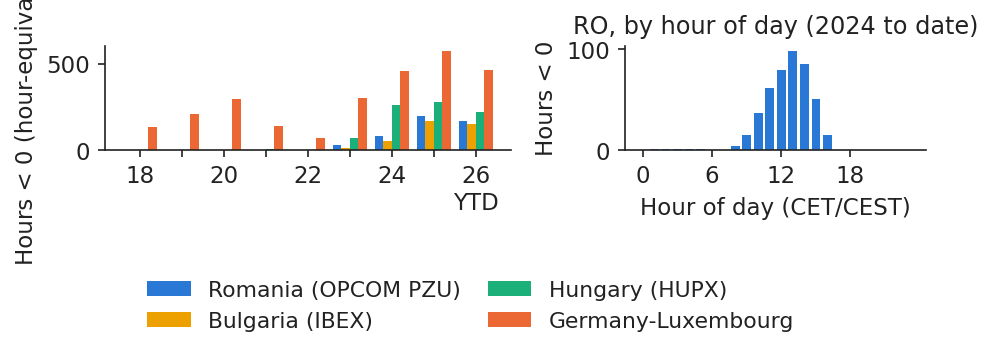
Number of hours with a negative day-ahead price per year (hour-equivalents) in the four zones, 2018 to October 2026 (left), and Romanian negative hours by hour of the day since 2024 (right).
Source: energy-charts.info (Fraunhofer ISE); exchange prices (OPCOM, IBEX, HUPX, EPEX SPOT) via ENTSO-E. Data: 2018 to 2026-10-31; a 15-min MTU counts 0.25 h.
The table counts the hours with a negative day-ahead price in each zone, in hour-equivalents; the last column gives the number of negative quarter-hours in 2026, which is 4 times the hour-equivalents.
Zone
2022
2023
2024
2025
2026 YTD
Jan–Oct 2025
2026: 15-min MTUs
RO
0
32
85
196
171.75
196
687
BG
0
11
55
170
152.25
170
609
HU
0
74
262
281
223.50
281
894
DE-LU
69
301
457
574.75
465
574.75
1,860
Romania had no negative prices before 2023, while Germany had them every year, because of inflexible plants combined with wind. Romania, Bulgaria and Hungary move together, but Hungary has had more negative hours since 2023. In January–October 2026 Romania had 171.75 negative hours, against 196.00 hours in the same months of 2025: the growth of negative prices is not automatic, and Case study (d) looks at what drives it.
In practice: in reports to the board, write "687 quarter-hours (171.75 h)", never a bare number.
Prices can be zero or negative: use differences or asinh
Percentage changes and logarithms need a positive price, so they fail precisely in the hours that matter most for solar and storage. A transformation that accepts any sign keeps the zero and negative hours (Uniejewski, Weron & Ziel, 2018):
where \(p_t\) is the price, \(\tilde p\) its median, \(\widehat{\mathrm{MAD}}\) the median absolute deviation (MAD) multiplied by 1.4826, so that it estimates the standard deviation under normality, \(x_t\) the standardised price and \(y_t\) the transformed price. For large \(|x|\), \(\asinh(x)\approx\operatorname{sign}(x)\ln(2|x|)\): the transformation behaves like a logarithm in both tails and is almost linear near zero.
In January–October 2026, 1,189 of 29,184 Romanian quarter-hours had a price of zero or below, 502 of them exactly 0. After the transformation the skewness falls from 1.19 to 0.13 and the excess kurtosis from 6.73 to −0.55: the distribution becomes almost symmetric, with thin tails. For reporting, however, PZU moves are best expressed simply as differences in EUR/MWh.
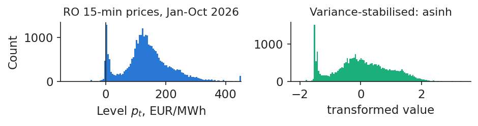
Histogram of all Romanian quarter-hour prices, January–October 2026, in levels (EUR/MWh, left) and after the asinh transformation (right).
Source: energy-charts.info (Fraunhofer ISE); exchange prices (OPCOM, IBEX, HUPX, EPEX SPOT) via ENTSO-E. Data: all 15-min MTUs, 2026-01-01 to 2026-10-31.
"Fat tails" means that very large up or down days happen much more often than a bell curve would allow. The evidence comes from Brent daily log returns from 5 January 2015 to 30 October 2026, without the 141 contract-roll days. Under the normal distribution, moves beyond 4 standard deviations should occur 0.18 times in such a sample; we observe 16. The excess kurtosis is 13.98, against 0 for the normal distribution; the formulas and the Jarque–Bera (JB) normality test are in Appendix F (Jarque & Bera, 1980).
The quantile–quantile plot makes the point visually: the observed quantiles depart from the straight line of the normal distribution in both tails, and a Student-\(t\) density fits the histogram much better than the normal one.
In practice: a fuel-budget limit built on the normal curve understates how often a crisis day comes (Lecture 4).
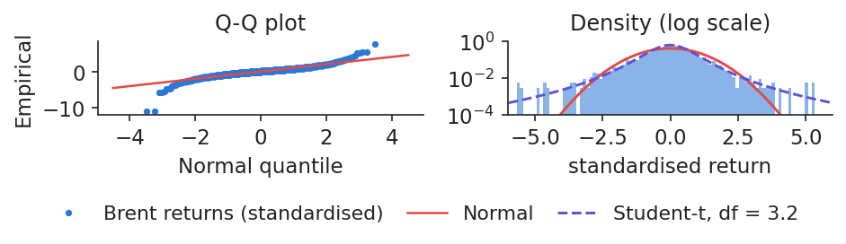
Brent daily log returns, 5 January 2015 to 30 October 2026: quantile–quantile plot against the normal distribution (left) and histogram of standardised returns with normal and Student-t densities (right).
Source: Yahoo Finance (BZ=F). Data: 2015-01-05 to 2026-10-30.
A big move today makes another big move tomorrow more likely, even if its direction is unpredictable. The Ljung–Box statistic tests whether the first \(m\) autocorrelations of a series are jointly zero:
where \(T\) is the number of observations, \(\hat\rho_k\) the sample autocorrelation at lag \(k\), and \(\chi^2_m\) the chi-squared distribution with \(m\) degrees of freedom, which the statistic follows when there is no autocorrelation (Ljung & Box, 1978).
For Brent, with \(m=10\), the statistic is 28.1 for the returns \(r\) but 506.9 for the squared returns \(r^2\), against a 5% critical value of 18.31. Both reject, but the difference in size is the message: there is little memory in the direction of moves and a lot in their size. This volatility clustering is what the models of Lecture 3 describe.
In practice: after a shock, a risk desk keeps wider limits for weeks, not days (Lecture 3).
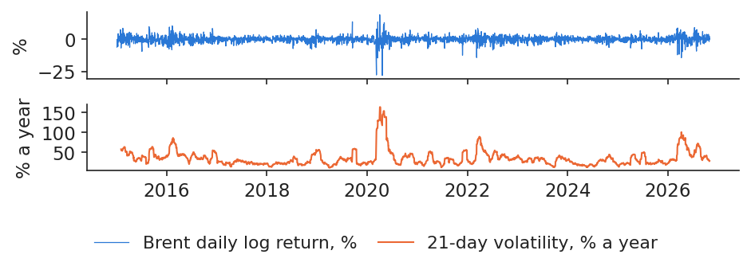
Brent daily log returns in % (top) and their 21-day volatility in % a year (bottom), 5 January 2015 to 30 October 2026.
Source: Yahoo Finance (BZ=F). Data: 2015-01-05 to 2026-10-30.
Energy prices shift level, follow daily, weekly and annual cycles, spike, turn negative, have fat tails and cluster in volatility. Units, clocks and gaps must be handled before any of these facts can be measured.
Time-series toolkit
This section introduces the tools used throughout the course to describe a price series: stationarity, autocorrelation and partial autocorrelation, the naive benchmark, unit-root tests, decomposition and exponential smoothing. Each tool is applied to the Romanian, German or Brent data.
Weak stationarity: constant mean, variance and autocovariances
A series is (weakly) stationary if its average, its spread and its memory are the same in every period:
\[\E X_t=\mu,\quad \Var X_t=\gamma_0,\quad \Cov(X_t,X_{t-k})=\gamma_k\quad \text{for every } t\]
(1.9)
where \(X_t\) is the value of the series at time \(t\), \(\mu\) its constant mean, \(\gamma_0\) its constant variance and \(\gamma_k\) the autocovariance at lag \(k\), which depends only on the lag \(k\) and not on the date \(t\).
The chart shows three simulated series, the only simulated figure of the lecture: white noise; a first-order autoregressive (AR) model, AR(1), with \(\phi=0.9\), which always reverts to its mean; and a random walk, whose shocks are permanent. A common mistake is to think that a random walk has low autocorrelation because it looks erratic. The opposite is true: its level autocorrelation is close to 1, here 0.96 at lag 10, because every value contains all past shocks.
In practice: a historical average price is a forecast only if the series is stationary; test it before budgeting with it.
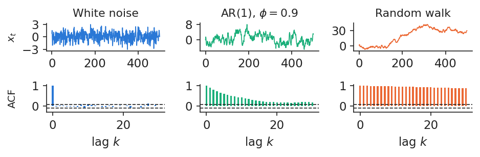
Simulated series (T = 500, standard normal shocks): white noise, AR(1) with phi = 0.9 and a random walk, with their sample autocorrelation functions below.
where \(x_t\) is the observation at time \(t\), \(\bar x\) the sample mean and \(T\) the sample size. For white noise, the sample autocorrelations lie within the band \(\pm1.96/\sqrt T\) with probability 95%. The Bartlett band at lag \(k\), \(\pm1.96\sqrt{(1+2\sum_{j<k}\hat\rho_j^2)/T}\), is wider and is valid if the true autocorrelation is zero beyond lag \(k-1\). The partial autocorrelation function (PACF) measures the memory at lag \(k\) net of the shorter lags.
Four reading rules cover most cases. A slow decay from near 1 indicates persistence or a unit root, which must be tested. A geometric decay with a PACF that cuts off after \(p\) lags points to an AR(\(p\)) model. Peaks at lags 7 and 14 for daily data, or 24 and 168 for hourly data, reveal seasonality. If all values are inside the band, there is no linear memory, but the squares \(x_t^2\) should be checked too, since volatility can still cluster (Hyndman & Athanasopoulos, 2021).
In practice: a supplier's forecast for tomorrow starts from "same weekday last week": the autocorrelation at lag 7 is 0.672 in Romania since 2023.
Autocorrelation of prices at daily and weekly lags
The two charts apply the reading rules to Romanian prices. For daily base prices from 1 January 2023 to 31 October 2026, the autocorrelation at lag 1 is \(\hat\rho_1=0.789\) and at lag 7 \(\hat\rho_7=0.672\); the partial autocorrelation at lag 7 is \(\hat\alpha_7=0.257\), so the same weekday of the previous week carries information beyond that of the last few days. The autocorrelation function decays slowly, with peaks at multiples of 7.
For hourly prices in 2024, the autocorrelation at lag 24 (same hour yesterday) is \(\hat\rho_{24}=0.776\) and at lag 168 (same hour last week) \(\hat\rho_{168}=0.681\). Prices therefore remember yesterday, last week and the same hour of the day: these lags are the natural inputs of the forecasting models of Lecture 2 (Ziel & Weron, 2018).
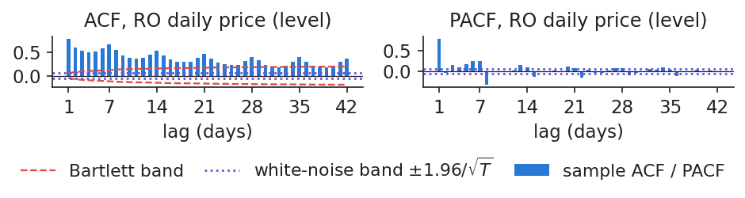
Sample autocorrelation (left) and partial autocorrelation (right) of Romanian daily base prices, 1 January 2023 to 31 October 2026 (T = 1400), with the Bartlett band.
Source: energy-charts.info (Fraunhofer ISE); exchange prices (OPCOM, IBEX, HUPX, EPEX SPOT) via ENTSO-E. Data: top: 2023-01-01 to 2026-10-31, T = 1400; bottom: 2024, hourly, T = 8784.
The simplest sensible forecast says that tomorrow's price for each hour is today's price for that hour, except after weekends, when the same day of the previous week is used:
where \(p_{d,h}\) is the price of hour \(h\) on day \(d\), \(\hat p_{d,h}\) its forecast, \(n\) the number of forecasts, and the mean absolute error (MAE) is the average absolute forecast error in EUR/MWh (Nogales et al., 2002).
For Romania in 2025 the naive forecast had an MAE of 22.9 EUR/MWh, at a mean price of 108.2. The weekday/weekend rule beats both pure lags, yesterday and same day last week, in 7 of 8 years; all years and Germany are in Appendix E. A model that does not beat this benchmark adds nothing, however sophisticated it is (Weron, 2014; Lago et al., 2021).
In practice: before paying for a forecasting service, ask for its MAE next to this benchmark.
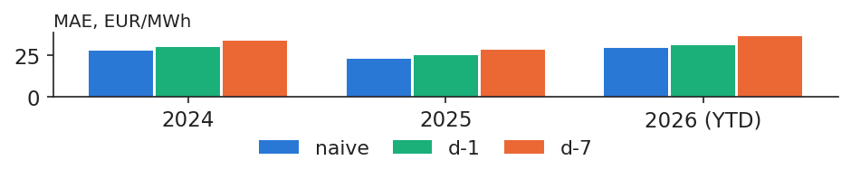
MAE (EUR/MWh) of the naive forecast and of the two pure lags (day d−1 and day d−7) for Romanian hourly prices in 2024, 2025 and 2026 YTD.
Source: energy-charts.info (Fraunhofer ISE); exchange prices (OPCOM, IBEX, HUPX, EPEX SPOT) via ENTSO-E. Data: hourly day-ahead prices, 2024-01 to 2026-10.
One test starts from "shocks are permanent" and looks for a pull back to a mean; the other starts from "the series is stable" and looks for a slow drift. The augmented Dickey–Fuller (ADF) test estimates
where \(\Delta x_t=x_t-x_{t-1}\) is the change of the series, \(\alpha\) a constant, \(\gamma\) the pull towards the mean, \(\delta_j\) the coefficients of the extra lagged changes that absorb short-run dynamics, and \(u_t\) the error. The null hypothesis is \(H_0:\gamma=0\), a unit root; the statistic \(\hat\gamma/\mathrm{se}\) is compared with Dickey–Fuller critical values, about \(-2.86\) at 5%, and the number of lags \(p\) is chosen by the Akaike information criterion (AIC) (Dickey & Fuller, 1979). The Kwiatkowski–Phillips–Schmidt–Shin (KPSS) test has the opposite null, stationarity, and rejects for large values, above 0.463 at 5% (Kwiatkowski et al., 1992). Full formulas are in Appendix A.
KPSS: keep
KPSS: reject
ADF: reject
stationary
conflict
ADF: keep
inconclusive
unit root*
*Consistent with a unit root, not a proof: ADF has low power against slow mean reversion, and level breaks such as 2022 push it towards "unit root".
In practice: if a supplier's price can carry permanent shocks, "prices will come back to normal" is not a safe budget assumption.
ADF and KPSS results by series: levels and changes
Applying both tests, with a constant only and ADF lags chosen by AIC at the 5% level, gives one verdict per series:
Series
Sample
T
ADF
p
KPSS
p
Verdict
RO price, level
2015–2026
4,317
−2.71
0.073
3.645
<0.01
unit root*
RO price, daily change
2015–2026
4,312
−14.81
<0.001
0.045
>0.10
stationary
DE-LU price, level
2015–2026
4,322
−3.54
0.007
3.441
<0.01
conflict
Brent, log price
2015–2026
2,976
−2.19
0.212
3.820
<0.01
unit root*
Brent, log return
2015–2026
2,975
−10.79
<0.001
0.049
>0.10
stationary
RO hydro, deseasonalised
2015–2025
132
−4.19
<0.001
0.354
0.097
stationary
The Romanian and Brent levels are consistent with a unit root (not rejected, which is not a proof), while their changes are stationary. For Germany both tests reject their null, a conflict that reflects mean reversion combined with the 2021–2022 level shift. Hydro output is tested after removing its monthly means, since it is a seasonal series, and it is stationary. Restricting the Romanian price to the period since 2023 does not change the verdict: ADF \(p=0.361\), KPSS 1.039.
In practice: model price changes (or transformed prices) and put seasonality in explicitly.
Decomposition splits a series into trend, season and the rest
A seasonal series can be written as the sum of three components:
\[x_t=T_t+S_t+R_t\]
(1.13)
where \(T_t\) is the trend, \(S_t\) the seasonal component and \(R_t\) the remainder. The classical method estimates the trend with a centred moving average (MA) and keeps the seasonal pattern fixed; the Seasonal–Trend decomposition using Loess (STL) lets it evolve over time (Cleveland et al., 1990).
The chart applies both to Romanian monthly mean load from January 2016 to December 2025. Relative to the trend, load is higher by 0.69 GW in January and February and lower by 0.65 GW in May. STL shows that the seasonal amplitude has shrunk from 1.52 to 1.27 GW over the decade. The moving-average weights and a worked example are in Appendix B, and the STL algorithm in Appendix C.
In practice: Transelectrica and suppliers plan monthly capacity with seasonal indices; STL shows when the pattern itself shifts.
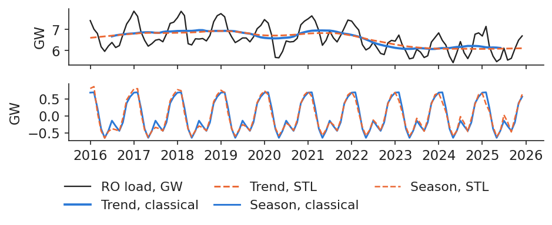
Romanian monthly mean load, January 2016 to December 2025 (GW): observed series with the classical and STL trends (top) and the classical and STL seasonal components (bottom).
Source: energy-charts.info (Fraunhofer ISE); ENTSO-E (Transelectrica data for Romania). Data: 2016-01 to 2025-12, monthly mean load.
where \(\ell_t\) is the smoothed level at time \(t\), \(x_t\) the new observation (the news), \((1-\alpha)\ell_{t-1}\) the memory of the past, \(\alpha\) the smoothing weight and \(h\) the half-life in days, the number of days after which an observation's weight has halved.
On Brent from January 2024 to October 2026, an exponentially weighted moving average (EWMA) with a 10-day half-life uses \(\alpha=0.067\). If instead \(\alpha\) is chosen to minimise one-step forecast errors, simple exponential smoothing (SES) picks 0.948: almost all the weight goes to the last price, which is what we expect for a series close to a random walk (Hyndman & Athanasopoulos, 2021).
In practice: an EWMA is a good contract reference price, but a weak forecast.
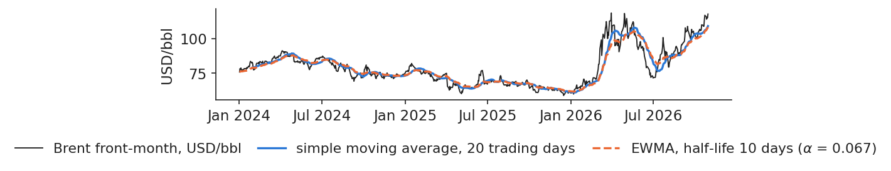
Brent daily close (USD/bbl), 2 January 2024 to 30 October 2026, with a simple moving average over 20 trading days and an EWMA with a 10-day half-life.
Source: Yahoo Finance (BZ=F). Data: 2024-01-02 to 2026-10-30.
Price levels behave like unit-root series and their changes are stationary; prices remember yesterday, last week and the same hour. The naive forecast built on these lags is the benchmark every model must beat.
Case studies on current data
Six episodes from 2023 to 2026 show the stylized facts at work: a wet and a dry year, an oil shock, a regional price separation, negative prices and solar, the price rise of 2026 and the arrival of batteries in Bulgaria. Each case study is read with the tools of the previous sections and with real data only.
Case study (a): 2025 hydro output was a third below wet 2023
Hydro output in Romania depends on rain and snow. In 2023, a wet year, run-of-river and reservoir plants produced 18.34 TWh, the highest since 2015; in 2025, a dry year, they produced 12.15 TWh, the lowest, a fall of 33.8%. Compared with the 2015–2025 mean of 15.85 TWh, 2025 was 23.3% below normal.
In the same years Romania went from net exporter, with net imports of −3.06 TWh, to net importer, with +3.76 TWh. This is consistent with less water, but it is not proof: nuclear output, demand and prices abroad also moved between the two years, and the chart alone cannot separate their effects.
In practice: a hydro producer's annual output and a net importer's bill depend on rain as much as on the market.
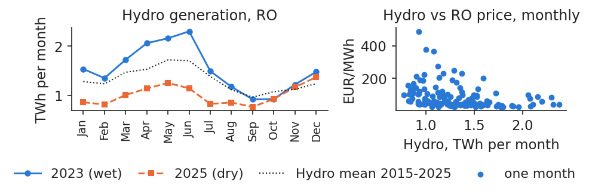
Monthly Romanian hydro output (TWh) in 2023 and 2025 with the 2015–2025 monthly mean (left), and monthly mean price against monthly hydro output (right).
Source: energy-charts.info (Fraunhofer ISE); ENTSO-E (Transelectrica data for Romania). Data: monthly, 2015-01 to 2025-12.
where \(p_m\) is the mean Romanian day-ahead price in month \(m\) (EUR/MWh), \(\mathrm{Hydro}_m\) the hydro output (TWh), \(\mathrm{TTF}_m\) the Dutch gas price (EUR/MWh), \(\beta_0,\beta_1,\beta_2\) the coefficients and \(u_m\) the error. The model is estimated by ordinary least squares (OLS) with heteroskedasticity- and autocorrelation-consistent (HAC) standard errors with 6 lags.
2015–2025
estimate
s.e.
t
Constant
44.80
10.21
4.39
Hydro
−19.55
7.02
−2.78
TTF
1.89
0.06
34.16
One TWh more hydro in a month goes with a price lower by 19.55 EUR/MWh on average, gas held fixed. This is an association, not a measured effect. Price and gas levels trend (Section 3), so the regression may be spurious unless the two are cointegrated: the \(R^2\) of 0.941 is not evidence, and Lecture 2 tests cointegration.
In practice: hydro producers and traders watch reservoir levels as a leading indicator of the PZU price.
Case study (b): Brent +7% in a day, then back below the pre-war price
In June 2025 the Brent price reacted sharply to the war between Israel and Iran. On 12 June 2025 Brent closed at 69.36 USD/bbl; on 13 June, the day Israel struck Iran, it closed at 74.23, a rise of 7.0% in one day, or 4.3 standard deviations of the 2024 daily returns. The price peaked at 77.01 on 20 June 2025. On 24 June, with a ceasefire in effect, it closed at 67.14, which is 12.8% below the peak and 3.2% below the level of 12 June.
The episode shows how a geopolitical shock is first priced as a risk premium and then removed as quickly when the feared supply disruption does not happen. It also illustrates the fat tails of the previous section: a 4.3 standard-deviation day is rare under normality, but not in oil.
In practice: a fuel buyer hedged at the 20 June peak; four days later the market was far below that price.
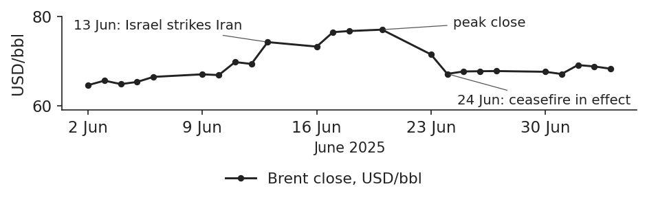
Brent daily close (USD/bbl) on trading days from 2 June to 4 July 2025.
Source: Yahoo Finance (BZ=F). Data: 2025-06-02 to 2025-07-04, trading days.
In summer 2024 the coupled markets of South-East Europe separated from Central Europe. In July 2024 the average day-ahead price was 145.14 EUR/MWh in Romania, 136.47 in Bulgaria and 135.54 in Hungary, but only 67.70 in Germany–Luxembourg.
The right panel zooms in on 16 July 2024, when the daily gap between Romania and Germany reached 162.87 EUR/MWh. The Romanian hourly price peaked at 801.62 EUR/MWh at 20:00, while the German price was −11.48 EUR/MWh at 14:00: on the same day, Germany had too much solar power at midday and South-East Europe too little power in the evening.
In practice: for South-East European buyers, the evening hours of hot, dry summers are the main price risk.
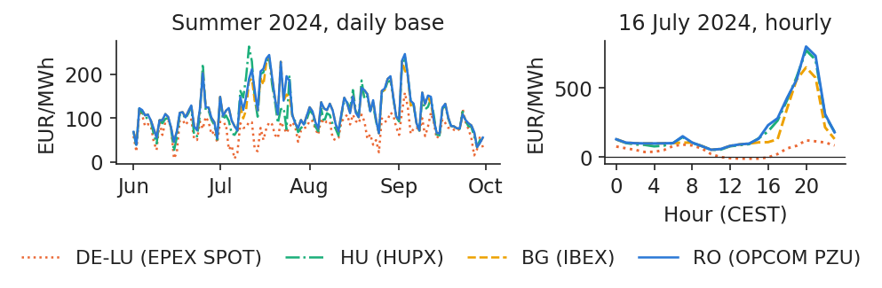
Daily base prices in the four zones, 1 June to 30 September 2024 (left), and hourly prices on 16 July 2024 (right).
The share of July 2024 hours in which prices were equal, within 0.01 EUR/MWh, shows where the network was binding: 86.8% for Romania–Bulgaria, but only 6.3% for Romania–Hungary and 3.1% for Romania–Germany. The network towards Central Europe was binding, although which element was binding cannot be read from prices alone. After sunset solar output disappears while air conditioning keeps demand high, so the region must import exactly when the network is full.
Water was also short. Romanian hydro output in July–August was 1.94 TWh in 2024 against 2.67 in 2023, and net imports averaged 737 MW against 66 MW. The summer peak came on 3 September 2024, with a Romanian daily price of 246.89 EUR/MWh (Germany 158.39) and an hourly price of 1,021.61 EUR/MWh at 19:00 CEST, the highest Romanian hourly price in our data.
The lesson for modelling is threefold. Coupled prices are equal only while the network is not binding. Romania should be modelled with regional drivers: hydro, solar and load in South-East Europe. The spread to Germany should be treated as a variable of its own, whose behaviour depends on the regime.
Case study (d): negative hours cluster in spring, as solar grows year after year
Since 2023, April and May hold 49.6% of all Romanian negative hours, and June–August another 34.0%. Spring combines high solar output, full reservoirs and mild demand, which is exactly the situation in which inflexible supply exceeds consumption at midday.
The right panel shows the driver behind the trend: metered solar output rose from 1.46 TWh in 2023 to 2.72 TWh in 2025, and reached 4.33 TWh in January–October 2026 alone.
In practice: the cheapest hours are spring weekend middays: a battery charges and flexible industry consumes then.
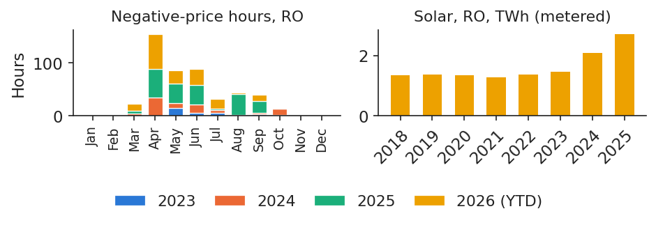
Romanian negative-price hours by calendar month, January 2023 to October 2026 (left), and annual metered solar generation in Romania in TWh, 2018–2025 (right).
Source: energy-charts.info (Fraunhofer ISE); exchange prices (OPCOM, IBEX, HUPX, EPEX SPOT) via ENTSO-E. Data: Jan 2023 to 2026-10-31 (left); 2018-2025 (right).
To describe the conditions on days with at least one negative quarter-hour, we estimate a logit model. It describes the realised conditions; it does not forecast for bidding, since the explanatory variables are only known after the fact.
where \(\Lambda(u)=1/(1+e^{-u})\) is the logistic function, \(R_d\) the residual load of day \(d\), that is load minus solar minus wind in daily means and GW, the demand left for other plants, \(\mathrm{Hyd}_d\) the hydro output (GW), \(\mathrm{Wkd}_d\) equals 1 on weekends, and \(\gamma_y\) are year effects. The sample runs from 1 January 2024 to 31 October 2026, \(n=1{,}035\) days, of which 108 had a negative price. The full table is in Appendix F.
In plain words: each extra GW of residual load multiplies the odds of a negative day by 0.24; each extra GW of hydro multiplies them by 4.52; and a weekend day multiplies them by 16.13. The McFadden pseudo-\(R^2\) is 0.369.
In practice: curtailment of renewables is most likely on spring weekends with full reservoirs.
Case study (e): 2026 prices climbed; oil jumped in March
In January–October 2026 the average Romanian price was 137.45 EUR/MWh, 29.8% above the same months of 2025. The rise accelerated at the end of the period: in October the average was 239.3 EUR/MWh, against 121.9 a year earlier.
Oil moved the same way. The monthly average of Brent rose from 64.77 to 108.34 USD/bbl. Within March, the May contract rose by 52.2%, which the press linked to the conflict involving Iran and the Strait of Hormuz. The fall of 14.5% shown on 1 April is not a market move but a contract roll, a reminder of the data-cleaning rules of Section 2.
In practice: budgets set in January were far too low: oil and domestic supply moved the same way.
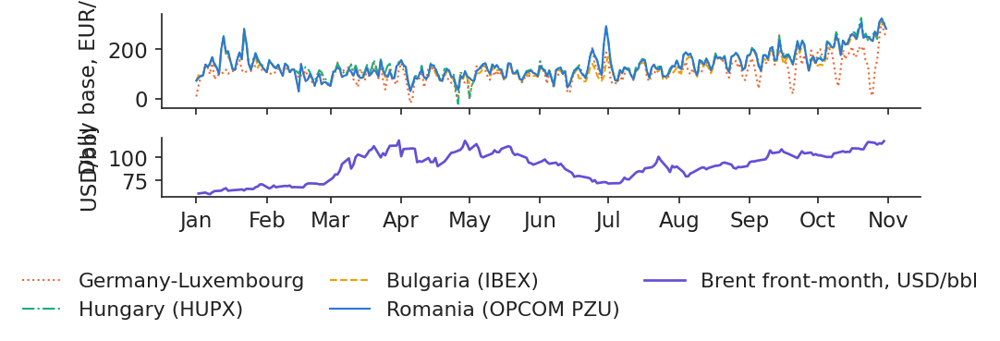
Daily base prices in the four zones (EUR/MWh, top) and Brent close (USD/bbl, bottom), 1 January to 31 October 2026.
Source: energy-charts.info (exchange prices via ENTSO-E); Yahoo Finance (BZ=F). Data: 2026-01-01 to 2026-10-31, daily.
Domestic supply fell at the same time. Romanian nuclear output was 0 MW on 19 days in May, according to the data, and again from August: Unit 1 of the Cernavodă plant was shut at the end of July and Unit 2 on 13 August, because of the low level of the Danube, which provides its cooling water. September nuclear output was not reported. Over January–October, nuclear output fell by 31.3% on the hours reported in both years, which is a lower bound for the true fall.
Hydro output was 14.7% lower than in 2025 in August–October, while solar output was 71.2% higher year to date. Statements by Nuclearelectrica, World Nuclear News and the National Commission for Nuclear Activities Control (CNCAN) document the outages.
In practice: one plant can move the national price; read REMIT messages as closely as the weather forecast.
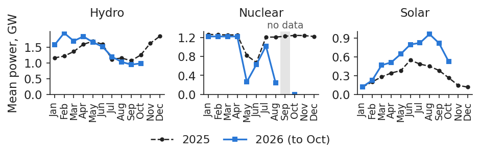
Monthly mean Romanian generation from nuclear, hydro and solar (GW) in 2025 and in 2026 up to October, on reported hours.
Source: energy-charts.info (Fraunhofer ISE); ENTSO-E (Transelectrica data for Romania). Data: monthly means of reported hours, 2025-01 to 2026-10.
The table puts the drivers of 2026 side by side, for January–October of each year.
Jan–Oct
2025
2026
% change
RO price, EUR/MWh
105.88
137.45
+29.8
DE-LU price, EUR/MWh
87.66
114.01
+30.1
RO − DE-LU, EUR/MWh
18.2
23.4
RO negative hours
196
171.75
RO hydro, TWh
9.61
10.44
+8.6
RO nuclear, TWh*
7.42
5.10
−31.3
RO solar, TWh
2.53
4.33
+71.2
RO net imports, TWh
3.67
2.51
*Hours reported in both years (lower bound).
Prices rose by about 30% in both Romania and Germany, so the rise was European, but the Romanian premium over Germany widened from 18.2 to 23.4 EUR/MWh. Over the whole period hydro was 8.6% above 2025, although it fell below 2025 in the late summer; nuclear was much lower, and solar much higher. A consumer that had hedged its 2026 purchases at the beginning of the year was protected from most of this rise.
In practice: price up by about 30%, with nuclear, hydro and oil all pointing the same way, and a hedge paid for itself.
Case study (e): 2026 extremes in Romania and on Brent
Averages hide the extremes that risk limits must withstand. In Romania, the daily base price ranged from a low of 29.63 EUR/MWh on 15 February 2026 to a high of 323.76 EUR/MWh on 29 October 2026. At quarter-hour resolution the range was much wider: from −99.75 EUR/MWh on 26 April 2026 at 13:00 to 1,015.65 EUR/MWh on 30 June 2026 at 18:45 (CET/CEST).
The chart marks these extremes on the daily Romanian price and the highest Brent close of the year.
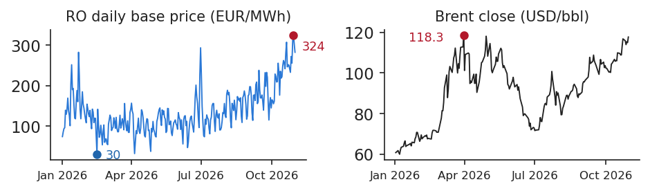
Romanian daily base price (EUR/MWh, left) and Brent close (USD/bbl, right), 1 January to 31 October 2026, with the year's extremes marked.
The German market reached the price floor. Its lowest quarter-hour price was −499.99 EUR/MWh on 1 May 2026 at 13:15, at the floor of −500 EUR/MWh then in force. After such prices on 26 April and 1 May, the harmonised minimum was lowered to −600 EUR/MWh for delivery from 29 May 2026, according to an SDAC note published by OPCOM on 7 May 2026. A series that touches the floor is censored, as explained in Section 1.
For Brent, the highest close of 2026 was 118.35 USD/bbl on 31 March 2026, and the largest daily change, excluding contract rolls, was −13.29% on 8 April 2026.
In practice: set risk limits on the extremes, not on the averages.
Case study (f): since spring 2026, Bulgaria's evenings are cheaper
The Romanian and Bulgarian markets are coupled and usually have almost the same price. In the evening hours from 19:00 to 22:00 local time (EET), from April to September, the average price was 171.1 EUR/MWh in Romania and 169.7 in Bulgaria in 2025, but 215.5 against 178.0 EUR/MWh in 2026. At midday, from 11:00 to 15:00, prices stayed close in 2026 (48.1 against 46.0).
A gap that opens only in the evening is what one would expect from batteries that charge at midday and discharge in the evening on one side of the border. The Bulgarian battery series, however, is reported only from 10 September 2026, after the gap opened in May 2026, so the link is an association, not proof.
In practice: a Romanian battery developer competes for the same regional evening spread (Lecture 6).
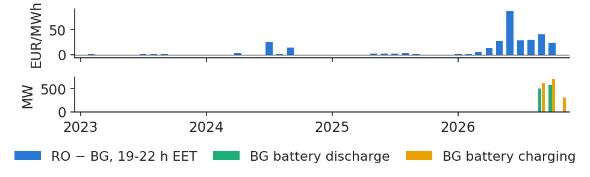
Monthly difference between Romanian and Bulgarian prices in the evening hours 19:00–22:00 EET (EUR/MWh, top) and Bulgarian battery discharge and charge (MW, bottom), January 2023 to October 2026, local time.
Source: energy-charts.info (Fraunhofer ISE); ENTSO-E (Transelectrica data for Romania). Data: 2023-01 to 2026-10, local time; BG battery series reported from 2026-09-10.
The case studies show the same facts at work: water, nuclear outages, oil, network limits and solar move Romanian prices, often in the same direction. Every claim is read as an association unless a design supports more.
Wrap-up
The wrap-up checks two skills of the lecture, counting negative prices and reading an autocorrelation, summarises the main messages, presents related research from our group and points to further resources.
In a month after 1 October 2025, 48 of Romania's quarter-hour prices were negative, and a board member asks how many negative hours there were. What do you answer? Answer:\(48\times15/60=12\) hour-equivalents. Saying 48 "hours" overstates the duration by a factor of 4 compared with earlier, hourly years. The best answer is "48 quarter-hours (12 hours)".
Your analyst says: "the PZU price autocorrelation is 0.98 at lag 1 and 0.90 at lag 30, so prices are white noise and last month tells us nothing". Is this right? Answer: No. White noise has autocorrelations near 0; values near 1 mean strong persistence, that is a unit root or a very slow mean reversion. Run ADF and KPSS and look at the autocorrelation of daily changes.
Two messages summarise the lecture. Romania's price comes from one auction per day, coupled across Europe, with 96 quarter-hours since October 2025; every count of hours must therefore be expressed in hour-equivalents. And the benchmark every model must beat is the naive forecast, which for Romania in 2025 had an MAE of 22.92 EUR/MWh. The next lecture turns to forecasting (Lecture 2).
Several papers from our group study the same market. Andrei, Pele & Cramer (2026) carry out a counterfactual analysis of Romania's June–July 2024 price crisis (Case study c) on ENTSO-E hourly data; they find that a 10% demand reduction is the robust first-tier intervention and that the price peak occurred in hours with almost no solar. In a second paper, Andrei, Pele & Cramer (2026) explain price forecasts: which drivers matter at which horizon, from 0–6 hours up to two weeks, and in which price regime, for Romanian hourly prices from 2018 to 2024, a preview of Lecture 7.
Proșcanu, Proșcanu, Pele & Costea (2025) compare classical seasonal models with neural networks for forecasting Romanian national consumption, a preview of Lecture 2. Proșcanu, Proșcanu & Pele (2025) show that Romanian consumption is price-inelastic and that Granger causality runs from consumption to price, not back, which explains why the demand curve is steep. Shahar, Lessmann & Pele (2025) apply causal machine learning to market liberalisation in the United States and find a short-term price decrease of about 7%. These findings are stated as in the papers' abstracts; all other numbers in the lecture come from our own data.
Experiment yourself: the notebook reproduces every chart and number of this lecture, L1_notebook.ipynb.
Appendix
The appendix gives the full formulas of the unit-root tests, a worked example of classical decomposition, the STL algorithm, the generation mix and the naive benchmark in numbers, the fat-tail statistics with the full logit table, and the conversion of fuel prices to EUR/MWh.
where \(\beta t\) is a deterministic trend and the other symbols are as in (1.12). The hypotheses are \(H_0:\gamma=0\) against \(H_1:\gamma<0\); the statistic \(\tau=\hat\gamma/\mathrm{se}(\hat\gamma)\) follows the Dickey–Fuller distribution, not the Student one, and \(p\)-values come from MacKinnon (1996). The lag order is chosen by minimising the AIC, starting from \(p_{\max}=12(T/100)^{1/4}\). The deterministic terms must match the alternative: a constant for a level-stationary alternative, a trend for a trend-stationary one.
where \(e_s\) are the residuals from a regression on a constant (and a trend), \(S_t\) their partial sums, \(\hat\sigma^2_{\mathrm{LR}}\) the long-run variance estimated with a Bartlett kernel, \(\hat\gamma_k\) the autocovariance of the residuals at lag \(k\) and \(\ell\) the bandwidth, chosen by the Hobijn et al. rule in statsmodels. The 5% critical value for the level version is 0.463.
Appendix B: classical decomposition, worked example
where \(x_t\) is the monthly mean load and \(\hat T_t\) the estimated trend. On Romanian load (GW), January 2016 to December 2025, the first trend value, for July 2016, is \(\hat T=\frac{1}{24}(7.424+7.870)+\frac{1}{12}\cdot 72.503=6.679\) GW, with January 2016 and January 2017 at half weight and February–December 2016 summed. The observed value was 6.389 GW, so the deviation from the trend is −0.290.
The seasonal index of month \(j\) is \(\hat S_j=\bar d_j-\frac1{12}\sum_i\bar d_i\), where \(\bar d_j\) is the mean deviation from the trend in month \(j\); the raw means summed to 0.0005, so the correction is tiny. The results were checked against statsmodels.
STL alternates two loops (Cleveland, Cleveland, McRae & Terpenning, 1990). The inner loop, repeated several times, (1) detrends the series, \(x_t-\hat T_t\); (2) smooths each month's sub-series (all Januaries, all Februaries and so on) by loess with span \(n_s\); (3) removes the low-frequency part of the result, which gives the seasonal component \(\hat S_t\); and (4) smooths \(x_t-\hat S_t\) by loess with span \(n_t\), which gives the trend \(\hat T_t\).
The outer loop computes robustness weights \(\rho_t=B\big(|\hat R_t|/(6\,\mathrm{median}|\hat R|)\big)\), with \(B(u)=(1-u^2)^2\) for \(|u|<1\) and 0 otherwise, where \(\hat R_t\) is the remainder; outliers therefore count less in the next inner loop. Here we use period 12, \(n_s=13\) and the robust version. The strength of seasonality, \(1-\Var(R)/\Var(S+R)\), is 0.848. STL is additive only: for multiplicative seasonality it is applied to \(\ln x_t\), or to the asinh of prices.
The last two columns use only the hours reported in both years. Positive net imports mean energy flowing into Romania. Between 2015 and 2025 total generation fell from 64.2 to 47.4 TWh while load changed little, and the country turned from a net exporter into a net importer.
The MAE is in EUR/MWh on hourly prices; from October 2025 the hourly price is the mean of the four 15-minute prices. In Romania the naive rule is the best of the three in every year except 2022, when the plain previous-day lag was slightly better. In Germany the previous-day lag wins more often, which shows that the benchmark itself must be checked market by market (Nogales et al., 2002; Weron, 2014).
Appendix F: fat tails and the negative-day logit in full
where \(r_t\) is the return on day \(t\), \(\bar r\) the mean return, \(\hat\sigma\) the standard deviation, \(T\) the number of returns, \(\hat S\) the skewness, \(\hat K\) the kurtosis (\(\hat K-3\) is the excess kurtosis) and \(\chi^2_2\) the chi-squared distribution with two degrees of freedom, which JB follows under normality. For Brent daily log returns, roll days removed, the skewness is −0.94, the excess kurtosis 13.98 and JB 23,500, against a 5% critical value of 5.99. A Student-\(t\) fit gives 3.21 degrees of freedom, a very heavy-tailed distribution.
The full logit for a day with at least one negative Romanian quarter-hour, with 2024 as base year ((1.16)):
estimate
odds ratio
z
Constant
−0.023
0.98
−0.02
Residual load, GW
−1.445
0.24
−7.67
Hydro, GW
1.508
4.52
4.37
Weekend
2.780
16.13
9.24
Year 2025
1.337
3.81
3.98
Year 2026
0.534
1.71
1.54
The odds ratio is the exponential of the coefficient. Holding residual load, hydro and the weekend effect fixed, a day in 2025 had higher odds of a negative price than a day in 2024, while the 2026 effect is not significant.
Appendix G: converting gas and oil prices to EUR/MWh
where \(1\ \text{MMBtu}=0.293071\) MWh, so that \(1/0.293071=3.412142\) MMBtu per MWh, and \(e_m\) is the monthly USD per EUR rate of the ECB. Brent is quoted in USD/bbl, where one barrel is 159 litres.
The World Bank TTF price is a monthly average in USD/MMBtu converted with the ECB rate; it is not a traded EUR quote. Fuels and power should be compared only in the same unit and currency: a gas price in USD/MMBtu and a power price in EUR/MWh differ by a factor of about 3.4 before any exchange rate is applied.
Abbreviations
ACER
EU Agency for the Cooperation of Energy Regulators
ACF
autocorrelation function
ADF
augmented Dickey–Fuller test
AIC
Akaike information criterion
ANRE
Romanian Energy Regulatory Authority
AR
autoregressive model
ARX
autoregressive model with exogenous variables
bbl
barrel (159 litres)
BG
Bulgaria (bidding zone)
CEST
Central European Summer Time
CET
Central European Time
CNCAN
National Commission for Nuclear Activities Control (Romania)
DE-LU
Germany–Luxembourg bidding zone
DST
daylight saving time
ECB
European Central Bank
EET
Eastern European Time (Romania)
ENTSO-E
European Network of Transmission System Operators for Electricity
heteroskedasticity- and autocorrelation-consistent
HU
Hungary (bidding zone)
HUPX
Hungarian Power Exchange
IBEX
Independent Bulgarian Energy Exchange
IDA
intraday auction
IQR
interquartile range
ISE
Fraunhofer Institute for Solar Energy Systems
JAO
Joint Allocation Office
JB
Jarque–Bera test
KPSS
Kwiatkowski–Phillips–Schmidt–Shin test
MA
moving average
MAD
median absolute deviation
MAE
mean absolute error
MMBtu
million British thermal units
MTU
market time unit
MW
megawatt
MWh
megawatt-hour
NEMO
Nominated Electricity Market Operator
OLS
ordinary least squares
OPCOM
Romanian electricity and gas market operator
OTC
over the counter (bilateral)
PACF
partial autocorrelation function
PPA
power purchase agreement
PZU
Piața pentru Ziua Următoare (day-ahead market)
REMIT
EU Regulation 1227/2011 on wholesale energy market integrity and transparency
RO
Romania (bidding zone)
RON
Romanian leu
RoR
run-of-river hydro
SDAC
Single Day-Ahead Coupling
SES
simple exponential smoothing
SIDC
Single Intraday Coupling
SMA
simple moving average
STL
Seasonal–Trend decomposition using Loess
TSO
transmission system operator
TTF
Title Transfer Facility (Dutch gas hub)
TWh
terawatt-hour
USD
US dollar
UTC
Coordinated Universal Time
YTD
year to date
References
Andrei, A.-V., Pele, D.-T. & Cramer, A.-A. (2026). Evaluating intervention effectiveness during extreme price events: A counterfactual analysis of Romania's 2024 energy crisis. Proceedings of the International Conference on Business Excellence, 20(1), 84–103. doi:10.2478/picbe-2026-0013
Andrei, A.-V., Pele, D.-T. & Cramer, A.-A. (2026). Multi-horizon explainability in energy price forecasting: Disentangling market dynamics and renewable intermittency in Romania's liberalized electricity market. Proceedings of the International Conference on Business Excellence, 20(1), 104–117. doi:10.2478/picbe-2026-0014
Cleveland, R. B., Cleveland, W. S., McRae, J. E. & Terpenning, I. (1990). STL: A seasonal-trend decomposition procedure based on loess. Journal of Official Statistics, 6(1), 3–73. scb.se
Dickey, D. A. & Fuller, W. A. (1979). Distribution of the estimators for autoregressive time series with a unit root. Journal of the American Statistical Association, 74(366), 427–431. doi:10.1080/01621459.1979.10482531
Hyndman, R. J. & Athanasopoulos, G. (2021). Forecasting: Principles and Practice, 3rd ed. OTexts. otexts.com/fpp3
Janczura, J., Trück, S., Weron, R. & Wolff, R. C. (2013). Identifying spikes and seasonal components in electricity spot price data: A guide to robust modeling. Energy Economics, 38, 96–110. doi:10.1016/j.eneco.2013.03.013
Jarque, C. M. & Bera, A. K. (1980). Efficient tests for normality, homoscedasticity and serial independence of regression residuals. Economics Letters, 6(3), 255–259. doi:10.1016/0165-1765(80)90024-5
Kwiatkowski, D., Phillips, P. C. B., Schmidt, P. & Shin, Y. (1992). Testing the null hypothesis of stationarity against the alternative of a unit root. Journal of Econometrics, 54(1–3), 159–178. doi:10.1016/0304-4076(92)90104-Y
Lago, J., Marcjasz, G., De Schutter, B. & Weron, R. (2021). Forecasting day-ahead electricity prices: A review of state-of-the-art algorithms, best practices and an open-access benchmark. Applied Energy, 293, 116983. doi:10.1016/j.apenergy.2021.116983
Ljung, G. M. & Box, G. E. P. (1978). On a measure of lack of fit in time series models. Biometrika, 65(2), 297–303. doi:10.1093/biomet/65.2.297
Maciejowska, K., Uniejewski, B. & Weron, R. (2023). Forecasting electricity prices. Oxford Research Encyclopedia of Economics and Finance. doi:10.1093/acrefore/9780190625979.013.667
MacKinnon, J. G. (1996). Numerical distribution functions for unit root and cointegration tests. Journal of Applied Econometrics, 11(6), 601–618. doi.org (Wiley)
Nogales, F. J., Contreras, J., Conejo, A. J. & Espínola, R. (2002). Forecasting next-day electricity prices by time series models. IEEE Transactions on Power Systems, 17(2), 342–348. doi:10.1109/TPWRS.2002.1007902
Proșcanu, C. A., Proșcanu, M. E., Pele, D. T. & Costea, A. (2025). Watt's next? Benchmarking time series models on Romania's national electricity consumption. Romanian Journal of Economic Forecasting, issue 3, 146–163. ipe.ro
Proșcanu, C., Proșcanu, M. & Pele, D. T. (2025). The price elasticity of electricity demand in Romania. Journal of Social and Economic Statistics, 14(2), 131–141. doi:10.2478/jses-2025-0009
Said, S. E. & Dickey, D. A. (1984). Testing for unit roots in autoregressive-moving average models of unknown order. Biometrika, 71(3), 599–607. doi:10.1093/biomet/71.3.599
Shahar, O., Lessmann, S. & Pele, D. T. (2025). Causality analysis of electricity market liberalization on electricity price using novel machine learning methods. arXiv:2507.12331
Uniejewski, B., Weron, R. & Ziel, F. (2018). Variance stabilizing transformations for electricity spot price forecasting. IEEE Transactions on Power Systems, 33(2), 2219–2229. doi:10.1109/TPWRS.2017.2734563
Weron, R. (2014). Electricity price forecasting: A review of the state-of-the-art with a look into the future. International Journal of Forecasting, 30(4), 1030–1081. doi:10.1016/j.ijforecast.2014.08.008
Ziel, F. & Weron, R. (2018). Day-ahead electricity price forecasting with high-dimensional structures: Univariate vs. multivariate modeling frameworks. Energy Economics, 70, 396–420. doi:10.1016/j.eneco.2017.12.016